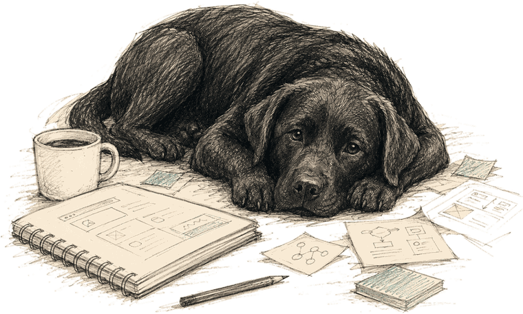

You opened my product notebook.
This is where ideas show up messy and slowly turn into something real. Signals in, a lot of arguing in the middle, a few things that survive.
↳ Follow the arrows. It's not tidy. That's the honest part.
The pile. Most of it goes nowhere.
save the thought before it disappears
most of these never make it past this column. that's fine.
Where most ideas get argued to death. A few earn their keep.
(It can. It always can.)
Now I need to know if humans agree.
…then usually right back to the question. (loop ~12 times.)
tried: a little "watch out for this" box on every flashcard
killed it. the card is the watch-out. one card, one complete thought.
people will read both sides of the flashcard
turns out they won't. so: no scrolling, no second side, no filler.
if I have to explain it three times, the design is wrong

Pinned up because it earned it.
ProductSnap App
- flashcards that don't scroll
- Product Gym
- product stories
Pulse
- signals → interpretation
- → one product question
Sketches
- rough drawings
- → clearer ideas
AI workflows
- human judgment
- + AI speed
- built in plain English
Not dead. Just not yet.
- fully autonomous Pulse publishing
- an AI product coach inside the app
- agent-readable portfolios
parking ≠ giving up. it's waiting for the right reason.